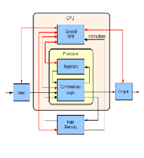
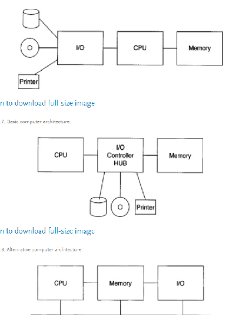

computer architecture Block diagram of a basic computer with uniprocessor CPU page
Links:
index
history
subcategories
Roles
Database Systems Performance Analysis
References
Sources
Block diagram of a basic computer with uniprocessor CPU
 